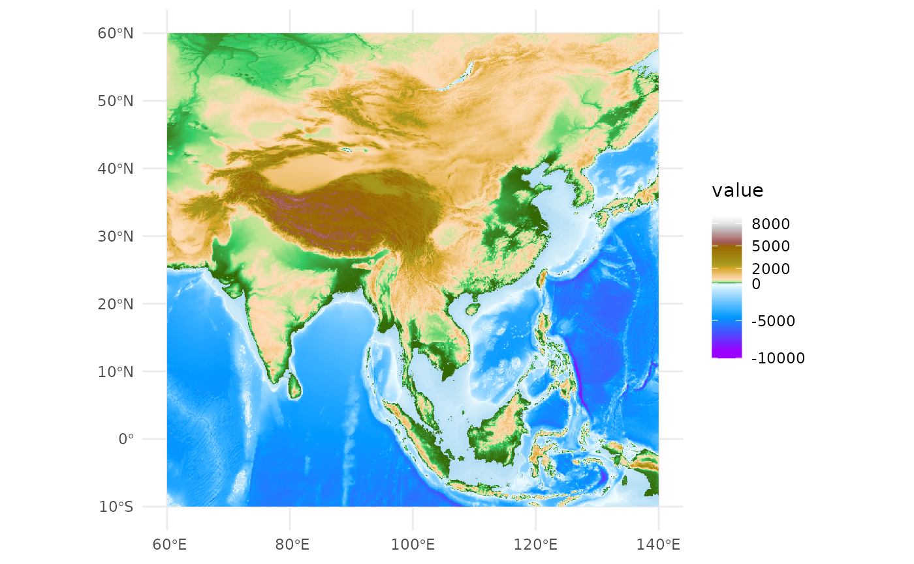
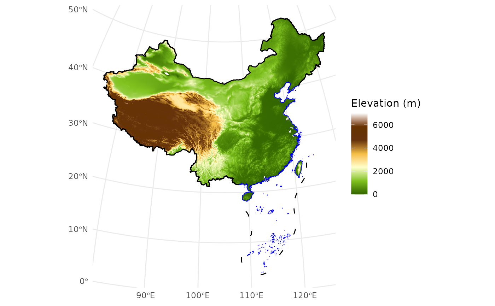

`basemap_dem` adds a digital elevation model (DEM) raster map of China as a layer to ggplot2. The function ensures the output map remains rectangular, regardless of the chosen projection. It supports displaying the DEM either within China's boundary or in a larger rectangular area around China. Users can provide their own DEM data using the `data` parameter, or the default built-in DEM data will be used.
Usage
basemap_dem(
data = NULL,
crs = NULL,
within_china = FALSE,
maxcell = 1e+06,
na.rm = FALSE,
...
)Arguments
- data
Optional. A `terra` raster object for custom DEM data.
- crs
Coordinate reference system (CRS) for the projection. Defaults to the CRS of the DEM data. Users can specify other CRS strings (e.g., `"EPSG:4326"` or custom projections).
- within_china
Logical. If `TRUE`, displays only the DEM within China's boundary. If `FALSE`, displays the DEM for a larger rectangular area around China. Default is `FALSE`.
- maxcell
Maximum number of cells for rendering (to improve performance). Defaults to `1e6`.
- na.rm
Logical. If `TRUE`, removes missing values. Default is `FALSE`.
- ...
Additional parameters passed to `geom_spatraster`.
Value
A `ggplot` object containing the elevation map of China as a layer, which can be further customized or plotted.
Examples
# \donttest{
# Before using the basemap_dem function, make sure the required data files are available.
# The required files are: "gebco_2024_China.tif" and "China_mask.gpkg".
# You can use check_geodata() to download them from GitHub if they are not available locally.
# Check and download the required data files if they are missing
check_geodata(files = c("gebco_2024_China.tif", "China_mask.gpkg"))
#> extdata dir: /home/runner/work/_temp/Library/ggmapcn/extdata (writable = TRUE)
#> cache dir: /home/runner/.local/share/R/ggmapcn (writable = TRUE)
#> Fetching 'gebco_2024_China.tif' into: /home/runner/work/_temp/Library/ggmapcn/extdata
#> Trying URL: https://cdn.jsdelivr.net/gh/Rimagination/ggmapcn-data@main/data/gebco_2024_China.tif
#>
#> Download attempt 1 for 'gebco_2024_China.tif' failed: HTTP response code said error [cdn.jsdelivr.net]:
#> The requested URL returned error: 403
#>
#> Download attempt 2 for 'gebco_2024_China.tif' failed: HTTP response code said error [cdn.jsdelivr.net]:
#> The requested URL returned error: 403
#>
#> Download attempt 3 for 'gebco_2024_China.tif' failed: HTTP response code said error [cdn.jsdelivr.net]:
#> The requested URL returned error: 403
#>
#> Giving up on 'gebco_2024_China.tif' from URL: https://cdn.jsdelivr.net/gh/Rimagination/ggmapcn-data@main/data/gebco_2024_China.tif (last error: HTTP response code said error [cdn.jsdelivr.net]:
#> The requested URL returned error: 403).
#> Trying URL: https://raw.githubusercontent.com/Rimagination/ggmapcn-data/main/data/gebco_2024_China.tif
#>
#> Saved to extdata: /home/runner/work/_temp/Library/ggmapcn/extdata/gebco_2024_China.tif
#> Using existing extdata file: /home/runner/work/_temp/Library/ggmapcn/extdata/China_mask.gpkg
#> [1] "/home/runner/work/_temp/Library/ggmapcn/extdata/gebco_2024_China.tif"
#> [2] "/home/runner/work/_temp/Library/ggmapcn/extdata/China_mask.gpkg"
# Define the CRS for China (EPSG:4326 is a common global geographic coordinate system)
china_proj <- "+proj=aeqd +lat_0=35 +lon_0=105 +ellps=WGS84 +units=m +no_defs"
# Example 1: Display full rectangular area around China using built-in DEM data
ggplot() +
basemap_dem(within_china = FALSE) +
tidyterra::scale_fill_hypso_tint_c(
palette = "gmt_globe",
breaks = c(-10000, -5000, 0, 2000, 5000, 8000)
) +
theme_minimal()
#> <SpatRaster> resampled to 1001520 cells.

# Example 2: Display only China's DEM and boundaries using built-in DEM data
ggplot() +
basemap_dem(crs = china_proj, within_china = TRUE) +
geom_boundary_cn(crs = china_proj) +
tidyterra::scale_fill_hypso_c(
palette = "dem_print",
breaks = c(0, 2000, 4000, 6000),
limits = c(0, 7000)
) +
labs(fill = "Elevation (m)") +
theme_minimal()
#> <SpatRaster> resampled to 1000968 cells.

# }